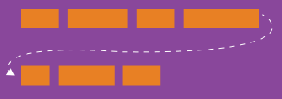
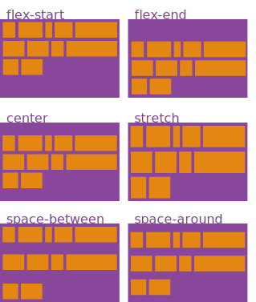
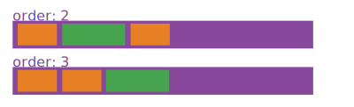

Display None
Frontend Development Les 4
Vorige week
- Box Model
- Positioning
- Units
Flexbox
Dingen naast elkaar op een lijn zetten
Properties for the parent

.container {
display: flex;
}Properties for the parent
flex-direction

.container {
flex-direction: row | row-reverse | column | column-reverse;
}Properties for the parent
justify-content

.container {
justify-content: flex-start | flex-end | center | space-between | space-around;
}Properties for the parent
align-items

.container {
align-items: flex-start | flex-end | center | baseline | stretch;
}Properties for the parent
flex-wrap

.container {
flex-wrap: nowrap | wrap | wrap-reverse;
}Properties for the parent
align-content

.container {
align-content: flex-start | flex-end | center | space-between | space-around | stretch;
}Properties for the Children
order

.item {
order: <integer>;
}Properties for the Children
flex-grow

.item {
flex-grow: <number>; /* default 0 */
}Properties for the Children
flex-shrink
.item {
flex-shrink: <number>; /* default 1 */
}Properties for the Children
flex-basis
.item {
flex-shrink: <length> | auto; /* default auto */
}Properties for the Children
align-self

.item {
align-self: auto | flex-start | flex-end | center | baseline | stretch;
}Flexbox in de praktijk
Het Web Is Gek
Het Web is er voor iedereen
Iedereen heeft een muis
behalve…
Alle netwerkconnecties zijn goed
behalve…
COmputers worden steeds sneller
behalve…
Alle beeldschermen zijn gekalibreerd
behalve…
Alle schermen zijn even groot
behalve…
Responsive Design
Hoe deden we dat in het begin?
Mobile first
Structured content first
Mediaqueries
Meta viewport
Mediaquery
body {
max-width: 30em;
}
@media (min-width: 30em) {
body {
max-width: 50em;
}
}
Mediaquery
body {
padding: 5.5555vh 11.1111vw;
}
@media (min-aspect-ratio: 1/1) {
body {
padding: 11.1111vh 11.1111vw;
}
}
Mediaqueries
<link media="(min-width: 50em)" rel="stylesheet" href="css.css">
@media (print) { … }
@media (orientation: landscape) { … }
@media (monochrome) { … }
@media (min-width: 70em), handheld and (orientation: landscape) { … }